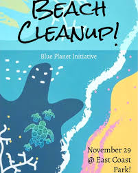
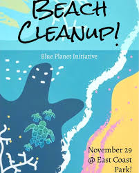

In terms of service, I haven't done much here at A&M. The service-like activities I have done so far basically amount to helping others understand their code. Most of my current service experience revolves around high school where I was part of the
Blue Planet Initiative (BPI) and Murals@SG clubs.
Though it might not seem like it currently, I'm enthusastic about helping people and making a difference. There are many types of service that I'd like to do such as helping the envirornment, helping the community, and teaching others. Here are service goals that I hope to meet one day:
 
